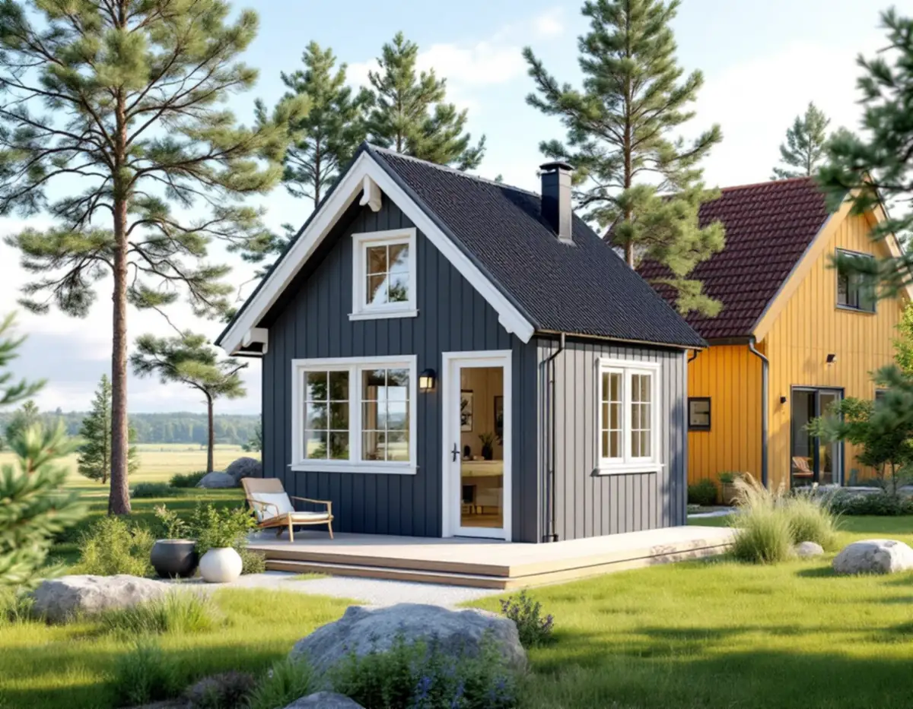
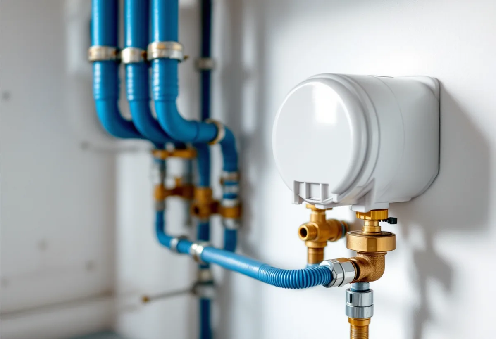
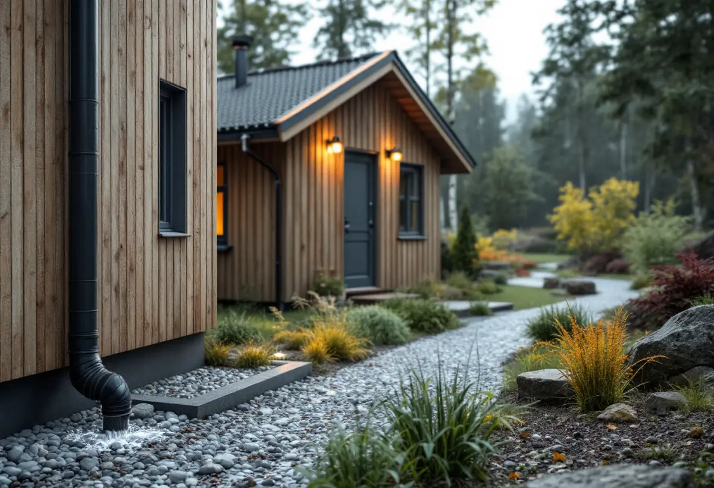

Platsbesök
Var villans vattenmätare sitter, var ledningarna går och hur tomten lutar.
Ett attefallshus med toalett, hygien- och matlagningsmöjligheter klassas av Tyresö kommun som ett nytt boende, och det märks när huset ska anslutas till vatten och avlopp. Geal Entreprenad AB bygger komplementbostadshus nyckelfärdigt och planerar ledningarna, vattenmätaren och regnvattnet tillsammans med huset.

Tyresö kommun skriver att du kan ansluta till det kommunala ledningsnätet även i ett äldre område där det finns ledningar, till exempel när du har byggt ett attefallshus. Kommunens steg är: gör en anmälan, få en anvisad förbindelsepunkt, betala anläggningsavgiften, beställ uppsättning av vattenmätare, anslut till nätet, ansök om slutbesked och betala sedan brukningsavgift varje kvartal.
Anmälan görs till kommunen och följs av ett startbesked. Till den hör en situationsplan på tomtkarta där vatten-, avlopps- och dagvattenledningar ritas in från anslutningspunkten till huset, och dagvattnet också om det leds till en stenkista. Dessutom behövs ett förslag till kontrollplan, och kommunen har ett exempel för VA-anslutning. Förbindelsepunkten ligger normalt vid fastighetsgränsen. Kommunen ansvarar för ledningarna fram dit och du för ledningarna inom fastigheten.

När ett komplementbostadshus ansluts till det kommunala nätet i Tyresö ska den nya byggnaden vara ansluten till en vattenmätare. Kommunen beskriver två alternativ. Antingen dras husets vattenledning vidare efter villans befintliga vattenmätare, eftersom servisledningen fram till mätaren ska vara obruten. Eller så tas vattnet från servisledningen mellan förbindelsepunkten och villans mätare, och då ska sammankopplingen besiktigas av VA-avdelningen och en ny vattenmätare installeras i eller före det nya huset.
För avlopp och dagvatten finns enligt kommunen inga motsvarande restriktioner, så husets avloppsledning kan kopplas ihop med fastighetens befintliga ledning som går till den kommunala huvudledningen. Har du i dag ett enskilt avlopp med slamtömning och går över till det kommunala nätet ska du meddela kommunens avfallsfunktion, så att en sluttömning kan göras. Vilket alternativ som passar avgörs av var villans mätare sitter och var huset ska stå, och det är något vi bestämmer innan schaktet planeras.
Tyresö kommun skriver att en komplementbyggnad eller ett komplementbostadshus med toalett, hygien- och matlagningsmöjligheter ger en ny anläggningsavgift för vatten och avlopp, även om avgiften redan har betalats för det ursprungliga bostadshuset. Skälet är att den nya byggnaden klassas som ett nytt boende, och för ett komplementbostadshus ligger avgiften på samma nivå som en lägenhetsavgift. Storleken styrs av VA-taxan.
Varje vattenmätare ger dessutom en egen årlig avgift enligt taxan, så två mätare ger dubbla årliga VA-avgifter. Det är värt att väga in när du väljer mellan de två sätten att ansluta vattnet. I omvandlingsområden där kommunen bygger ut kommunalt vatten och avlopp, till exempel Raksta etapp 8, kan fastighetsägare ansöka om lån för anläggningsavgifter och gatukostnad. Om byggrätten i omvandlingsområdena finns mer under tillbyggnad i Tyresö.
Ett nytt hus med uteplats ökar de hårda ytorna på tomten. Tyresö kommun skriver att du som fastighetsägare ansvarar för dagvattnet på din fastighet, och ger råd om hur det kan hanteras: begränsa andelen asfalt och stenläggning och välj hellre grus, stenmjöl eller genomsläpplig marksten, anlägg växtytor i tomtens låga delar och spara träd. Enligt kommunen kan ett träd med mycket blad dricka upp till cirka 500 liter vatten per dygn.
Kommunen råder också att marken runt ett hus ska luta bort från byggnaden och att huset inte ska stå i en lågpunkt eller svacka där vatten samlas. Det påverkar var på tomten vi föreslår att attefallshuset placeras. Själva huset kan enligt kommunen byggas utan bygglov inom detaljplan upp till 30 kvadratmeter och 4 meter till nocken, med 45 kvadratmeter sammanlagt, utom i ett kulturhistoriskt särskilt värdefullt område, men anmälan krävs när vatten och avlopp installeras i byggnaden eller inom tomten eller när en eldstad sätts in. Om gäststugor och förråd finns mer under snickare i Tyresö, och mått och paragrafer i reglerna för attefallshus.

Var villans vattenmätare sitter, var ledningarna går och hur tomten lutar.
Huset placeras med hänsyn till gräns, ledningar och regnvatten.
Situationsplan med ledningar och förslag till kontrollplan.
Startbesked, förbindelsepunkt och beställning av vattenmätare.
Grund, stomme, installationer och anslutning – nyckelfärdigt.
Ansökan om slutbesked när installationen är klar.
Rotavdrag gäller arbete i eller nära en bostad som kunden äger. Skatteverket skriver att det inte går att få rotavdrag för att bygga en helt ny bostad, och ett nytt hus eller en liknande fristående byggnad på småhustomten ger inget avdrag. Ett komplementbostadshus är både en ny bostad och en ny byggnad, så kostnadsförslaget är utan avdrag.
Storlek och planlösning, kök och badrum, grund på berg eller lera, avståndet till villans vattenmätare och avloppsledning och hur dagvattnet ska tas om hand. VA-avgifterna till kommunen kommer utöver vårt arbete. Efter ett kostnadsfritt platsbesök får du ett skriftligt kostnadsförslag.
Komplementbostadshus på tomten.
Attefallshus →Takbyte, takbesiktning och plåtarbeten.
Takläggare i Tyresö →Solberga, Raksta och Brevik.
Takrenovering i Tyresö →LTA-avlopp, källarbadrum och golvbrunn.
Badrumsrenovering i Tyresö →Startbesked, utstakning och slutbesked.
Byggföretag i Tyresö →Fritidshus som blivit helårshus på Brevikshalvön.
Fasadmålning i Tyresö →Timmerhus, fritidshus och villor i Tyresö.
Fasadrenovering i Tyresö →Gamla bågar och beslag i Tyresö.
Fönsterbyte i Tyresö →Fritidshus som blivit permanentbostäder.
Fönsterrenovering i Tyresö →Fritidshus som byggts om till villor.
Golvläggare i Tyresö →Slipa och spara gamla brädgolv.
Golvslipning i Tyresö →Stugor som blir helårshus.
Köksrenovering i Tyresö →Rödfärgade hus, stugor och interiörer i Tyresö.
Målare i Tyresö →Stuprör, rännor och beslag i Tyresö.
Plåtslagare i Tyresö →Stugor, altaner och tillbyggnader.
Snickare i Tyresö →Nytt tak med säker väg till skorstenen.
Takbyte i Tyresö →Ny tapet i rum med eldstad.
Tapetsering i Tyresö →Byggrätten i omvandlingsområdena.
Tillbyggnad i Tyresö →Rivningsavfallet, arkivet och eldstaden.
Totalrenovering i Tyresö →